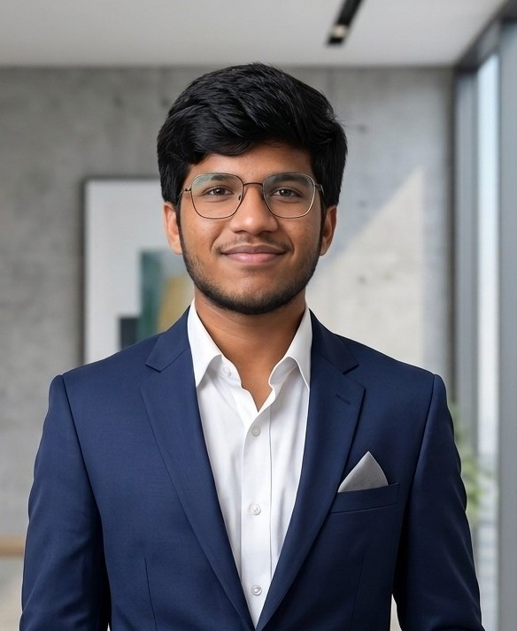

About Me
Get to know more about who I am, what I do and the technologies I enjoy working with.

Hello, I'm Raghusai Kanike
I am a Computer Science undergraduate at VIT-AP University with a strong interest in UI/UX Design, Software Development, and Java Programming. I enjoy transforming ideas into clean, user-friendly interfaces while building efficient backend solutions.
Alongside development, I actively practice Data Structures & Algorithms to strengthen my problem-solving skills and prepare for software engineering roles.
Education
B.Tech Computer Science & Engineering
VIT-AP University
2024 - 2028CGPA : 8.84
Intermediate
Dr. B.R. Ambedkar Residential College
2022 - 2024
97.6%Technical Skills
Career Objective
My goal is to become a Software Engineer who combines strong programming skills with thoughtful UI/UX design to build digital products that are both functional and enjoyable to use.